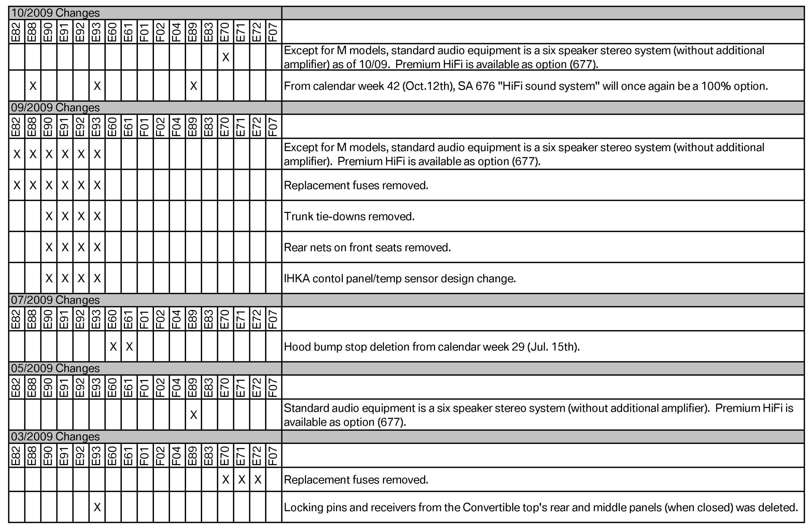
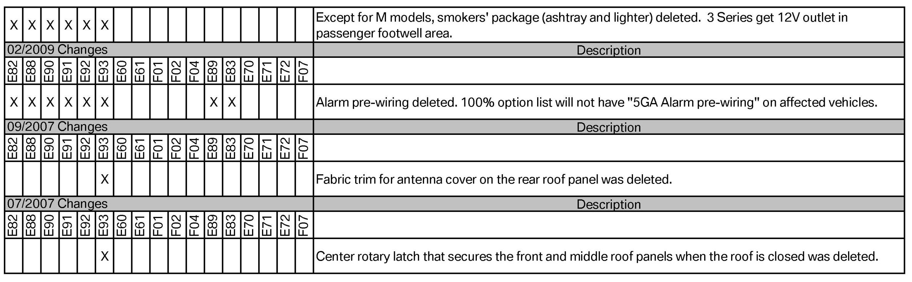

Vehicle - Product Content Changes
SI B 00 13 09Maintenance and General Hints
December 2009
Technical Service
SUBJECT
BMW Product Content Changes
MODEL
E82, E88 (1 Series)
E90, E91, E92, E93 (3 Series)
E60, E61 (5 Series)
E89 (Z4)
E83 (X3)
E70 (X5)
E71 (X6)
E72 (X6 ActiveHybrid)
SITUATION
Throughout the production lifecycle of a vehicle, there are numerous changes made. Similar vehicles with different productions dates may have variances in their equipment level. Sometimes these changes
are perceived as missing or incorrect components. Refer to the attached list of product changes to determine what is correct by vehicle production date.
WARRANTY INFORMATION
Installing components which are no longer installed at the factory is not covered under warranty. Refer to SI B01 04 03 for clarification on missing or incorrect parts on new vehicles.


ATTACHMENTS
view PDF attachment B001309BMW_Product_Content_Changes.

Disclaimer